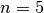
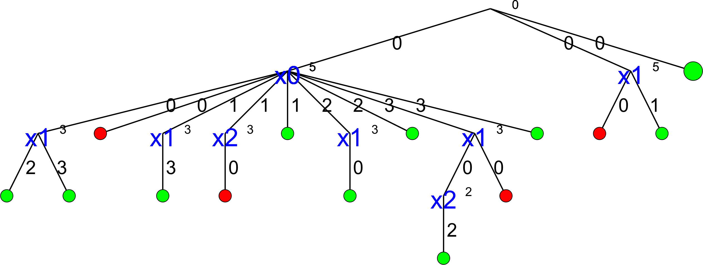

5.7. Customized search primitives
The search tree is traversed in a “linear” fashion: you go down left to “assign” values as long as possible and you backtrack whenever necessary. This means that you cannot jump from one branch of the tree to another.
But want you can do however is define the tree thanks to combinations of DecisionBuilders and Decisions[1].
| [1] | And other primitives like SymmetryBreakers, subject of the section Breaking symmetries with SymmetryBreakers. |
Warning
Some search primitives you can customize are declared in the header constraint_solver/constraint_solveri.h (notice the i at the end).
5.7.1. The basic search strategy visualized
How did we produce these wonderful images?
All the images of search trees were produced with cpviz and nqueens4. See the section cpviz: how to visualize the search for more details on how to obtain them.
Let’s have a look at our default strategy:
- We first choose the first unbound variable: CHOOSE_FIRST_UNBOUND.
- Then we assign it the smallest available value: ASSIGN_MIN_VALUE.
The complete search tree for  looks nice:
looks nice:
There are indeed two feasible solutions:
============================
size: 4
The Solve method took 0.001 seconds
Number of solutions: 2
Failures: 6
Branches: 10
Backtracks: 9
Stamps: 29
The complete search tree for  looks even better:
The solver seems to find the 10 feasible solutions quite quickly:
============================
size: 5
The Solve method took 0.07 seconds
Number of solutions: 10
Failures: 14
Branches: 26
Backtracks: 17
Stamps: 61
But then, and are really small numbers. And indeed, with , things start to
look really ugly:
That’s a real nightmare! The statistics collected during the search confirm this:
============================
size: 6
The Solve method took 0.005 seconds
Number of solutions: 4
Failures: 36
Branches: 70
Backtracks: 39
Stamps: 149
To only find 4 solutions, we need 70 branches and backtrack 39 times!
This trend is confirmed if we look at larger values of  :
:
|
7 | 8 | 9 | 10 | 11 | 12 |
|---|---|---|---|---|---|---|
| Time (s) | 0,014 | 0,052 | 0,25 | 0,899 | 4,236 | 21,773 |
| Number of sol. | 40 | 92 | 352 | 724 | 2680 | 14200 |
| Failures | 110 | 396 | 1546 | 6079 | 27246 | 131006 |
| Branches | 218 | 790 | 3090 | 12156 | 54490 | 262010 |
| Backtracks | 113 | 399 | 1549 | 6082 | 27249 | 131009 |
| Stamps | 445 | 1583 | 6189 | 24321 | 108989 | 524029 |
We clearly see the exponential pattern of intractable problems[2].
| [2] | This is not a proof of course. Maybe another search strategy would yield a better algorithm but we do know that this problem is intractable. |
We have seen in the previous section that the other implemented search strategies didn’t seem to do better. Can we do better? Let’s try!
5.7.2. First try: start from the center
5.7.3. Second try: dynamic variable selection
5.7.4. DecisionBuilders and Decisions more in details
Google or-tools |
User's Manual
Google search
Welcome
Tutorial examples
Current chapter
5. Defining search primitives: the n-Queens Problem
Previous section
5.6. Out of the box variables and values selection primitives
Next section
5.8. Breaking symmetries with SymmetryBreakers